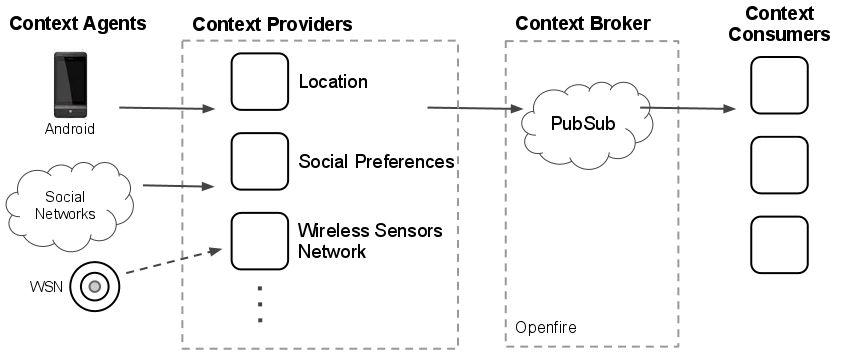
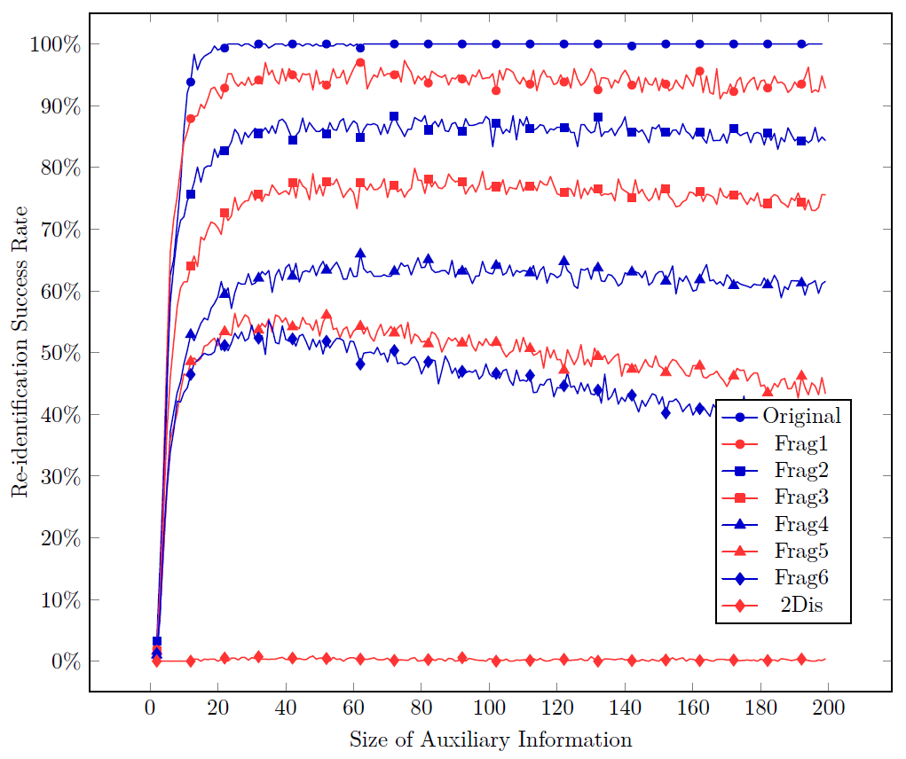

<!doctype html>
<html lang="en">

	<head>
		<meta charset="utf-8">

		<title>Context-awareness Privacy in Data Communications - Presentation</title>

		<meta name="description" content="Presentation for the Defense of the PhD Thesis 'Context-awareness Privacy in Data Communications'">
		<meta name="author" content="Joao Miguel Goncalves">

		<meta name="apple-mobile-web-app-capable" content="yes" />
		<meta name="apple-mobile-web-app-status-bar-style" content="black-translucent" />

		<meta name="viewport" content="width=device-width, initial-scale=1.0, maximum-scale=1.0, user-scalable=no, minimal-ui">

		<link rel="stylesheet" href="css/reveal.css">
		<link rel="stylesheet" href="css/theme/white.css" id="theme">
		<link rel="stylesheet" href="custom.css" id="custom">

		<!-- Code syntax highlighting -->
		<link rel="stylesheet" href="lib/css/zenburn.css">

		<!-- Printing and PDF exports -->
		<script>
			var link = document.createElement( 'link' );
			link.rel = 'stylesheet';
			link.type = 'text/css';
			link.href = window.location.search.match( /print-pdf/gi ) ? 'css/print/pdf.css' : 'css/print/paper.css';
			document.getElementsByTagName( 'head' )[0].appendChild( link );
		</script>

		<!--[if lt IE 9]>
		<script src="lib/js/html5shiv.js"></script>
		<![endif]-->
	</head>

	<body>

		<div class="reveal">

			<!-- Any section element inside of this container is displayed as a slide -->
			<div class="slides">
				<section>
					<h2 class="centered">Context-awareness Privacy in Data Communications</h2>
					<h3 class="centered">PhD Thesis Defense Presentation</h3>
					<p class="centered"><small>João Miguel Ribeiro Gonçalves
							<br/>Aveiro, 6th November 2015</small><p>
					</p>
					<div style="height:80px">
						
						
					</div>
					<div style="height:80px;margin-top:20px">
						
						
					</div>
				</section>

				<section>
					<section>
						<h2>1. Motivation</h2>
						<p>Privacy is a requirement for <strong>individuality</strong> and <strong>freedom</strong></p>
						<p>Potentially historic <strong>definition moment</strong></p>
					</section>
					<section>
						<h2>1.1 The Panopticon</h2>
						
					</section>
					<section>
						<h2>1.2 Why does privacy matter?</h2>
						<blockquote>
								&ldquo;By always being visible, by constantly living under the reality that one could be observed at any time, people assimilate the effects of surveillance into themselves.&rdquo;</blockquote>
						<p class="centered">- <strong>Daniel Solove</strong> in <em>The Digital Person</em></p>
					</section>
					<section>
						<h2>1.3 Why now?</h2>
						<p>Merger of <strong>offline and online</strong> worlds</p>
						<p>State internet-based <strong>surveillance</strong></p>
						<p>Personal-data driven <strong>digital economy</strong></p>
						<p>Proliferation of <strong>sensors</strong> and the advent of <strong>wearables</strong></p>
						<p>Vision of <strong>Ambient Intelligence</strong></p>
					</section>
					<section>
						<h2>1.4 Privacy in Media over Time</h2>
						<iframe src="timelines/index.html" style="width:1000px;height:800px"></iframe>
					</section>
				</section>

				<section>
					<section>
						<h2>2. Hypothesis</h2>
						<p>Unidentified <strong>synergies between different privacy-related bodies of knowledge</strong> exist that are <strong>key for improving privacy</strong> in face of <strong>near-future technologies</strong></p>
					</section>
					<section>
						<h2>2.1 Privacy is a complex goal</h2>
						<p>Data <strong>collection</strong>, <strong>use</strong> and <strong>dissemination</strong>, as well as privacy <strong>invasions</strong></p>
						<p>Context-dependent <strong>choice and control</strong></p>
						<p>Seemingly <strong>irrational user choices regarding privacy</strong>, due to poor communication and fast technological change</p>
					</section>
					<section>
						<h2>2.2 ICT fields are barely bridged...</h2>
						
					</section>
					<section>
						<h2>2.3 ...and contribute differently to challenges</h2>
						
					</section>
				</section>

				<section>
					<section>
						<h2>3. Towards an Identity Layer</h2>
						<p>Re-unite <strong>authentication</strong> and <strong>encryption</strong></p>
						<p><strong>Pseudonym</strong>-enabled single sign-on</p>
						<p>Separate <strong>network</strong>-level from <strong>data</strong>-level <strong>attacks</strong></p>
						<p><strong>Decentralize</strong> service providers</p>
					</section>
					<section>
						<h2>3.1 XMPP-based Identinet</h2>
						<p>Simplistic <strong>network</strong> &amp; <strong>service</strong> decoupling</p>
						<p>Identity-based <strong>endpoint resolution</strong> and <strong>routing</strong></p>
						
					</section>
					<section>
						<h2>3.2 User-hosted SOA</h2>
						<p>Distributed service-oriented ecosystem</p>
						
					</section>
					<section>
						<h2>3.3 Service-defined Payloads</h2>
						<pre><code class="xml">
<iq from='css1@societies.local/device' to='cis1.societies.local' type='set' id='join1'>
 <community xmlns='http://societies.org/community'>
	 <join></join>
 </community>
</iq>
						</code></pre>
					</section>
					<section>
						<h2>3.4 <em>SOCIETIES</em> prototype</h2>
						<p>Used by over 15 researchers to expose over 40 services</p>
						<P>Enabled research on local <strong>traffic scanning to detect misbehaved</strong> services &amp; applications</p>
						
					</section>
					<section>
						<h2>3.5 Identity-driven Service Discovery</h2>
						<pre><code class="xml">
<iq from='user1.societies.local' to='client@societies.local/device' type='result' id='info1'>
 <query xmlns='http://jabber.org/protocol/disco#info'>
  <identity category='component' type='generic' name='Societies Communication Manager'></identity>
  <feature var='http://jabber.org/protocol/disco#info'></feature>
  <feature var='urn:xmpp:ping'/></feature>
  <feature var='jabber:iq:last'/></feature>
  <feature var='urn:xmpp:time'/></feature>
  <feature var='http://jabber.org/protocol/pubsub'/></feature>
  <feature var='http://societies.org/api/schema/privacytrust/trust/broker'/></feature>
  <feature var='http://societies.org/api/schema/privacytrust/trust/model'/></feature>
  <feature var='http://societies.org/api/schema/privacytrust/trust/evidence/collector'/></feature>
 </query>
</iq>
						</code></pre>
					</section>
				</section>


				<section>
					<section>
						<h2>4. Privacy-friendly Context-awareness</h2>
						<p>Key aspect of Ambient Intelligence due to <strong>reactive</strong> nature</p>
						<p><strong>Decoupling</strong> between context acquisition and consumption</p>
						<p><strong>Extensible</strong> context information types</p>
						<p>"<strong>Real-time</strong>" context delivery</p>
						<p>Privacy through <strong>data minimization</strong></p>
					</section>
					<section>
						<h2>4.1 Near-future Context-awareness Scenarios</h2>
						<p><strong>Triggers</strong> and alarms (e.g. geo-fencing)</p>
						<p>Context-based <strong>content rating</strong></p>
						<p>Service <strong>adaptation</strong> through...</p>
						<p><small><strong>location</strong> - more content related to where he is located</small><br/>
							 <small><strong>presence and calendar</strong> - trigger disabling; useful information or time-sink content</small><br/>
							 <small><strong>proximity</strong> - more content related to co-located users</small><br/>
							 <small><strong>preferences</strong> - general interests such as politics, sports, finance, ...</small></p>
					</section>
					<section>
						<h2>4.2 Event-driven Context Delivery</h2>
						<p>Publish/subscribe for quick delivery to consumers</p>
						<p>Data gathering from constrained devices</p>
						
					</section>
					<section>
						<h2>4.3 Extensible Context Representation</h2>
						<pre><code class="xml">
<iq type="set" to="gps.c3s.hng.av.it.pt" id="set1">
  <query>
    <gps xmlns="http://c3s.hng.av.it.pt/gps">
      <latitude>45.21134</latitude>
      <longitude>7.67054</longitude>
      <accuracy>580</accuracy>
      <altitude>19.3</altitude>
      <bearing>18.3</bearing>
      <speed>5</speed>
    </gps>
  </query>
</iq>
						</code></pre>
					</section>
					<section>
						<h2>4.4 Low-Latency Access Control</h2>
						<p>Fine-grained access control for context minimization</p>
						<p>Must be compatible with "real-time" delivery (~190ms)</p>
						
					</section>
					<section>
						<h2>4.5 Context Access Control Policy</h2>
						<pre><code class="xml">
<privacy user="jmgonc@openfire" xmlns="http://iex.ptin.pt/ctx/privacy">
  <privacyProfiles>
    <profile id="1" name="GPS Tracking for Home Appliances">
      <publishedContextNamespace>http://iex.ptin.pt/ctx/gps</publishedContextNamespace>
      <parameterRules>
        <parameterRule>
          <parameter>latitude</parameter>
          <condition lang="regexp" var="">40\.6[2-5]\d*</condition>
        </parameterRule>
        <parameterRule>
          <parameter>longitude</parameter>
          <condition lang="regexp" var="">-8\.6[2-7]\d*</condition>
        </parameterRule>
      </parameterRules>
      <timeRule>
        <timeOfDayCondition lang="regexp" var="">.*</timeOfDayCondition>
        <weekdayCondition lang="regexp" var="">.*</weekdayCondition>
        <dailyExceptionCondition lang="regexp" var="">0</dailyExceptionCondition>
      </timeRule>
      <publishingDelay>0</publishingDelay>
    </profile>

...
  </privacyProfiles>
</privacy>
						</code></pre>
					</section>
					<section>
						<h2>4.6 Minimized Context Distribution</h2>
						<p>Filtering by parameter values (e.g. geo-fencing)</p>
						
						<p>Filtering by date/time (timeboxing)</p>
					</section>
					<section>
						<h2>4.7 Access Control Latency</h2>
						
					</section>
				</section>

				<section>
					<section>
						<h2>5. Data Re-Identification</h2>
						<p><strong>Indistinguishability</strong> of records within a database</p>
						<p>The curse of dimensionality
							<ul><li><strong>Quasi-identifier</strong> assumption is not realistic</li>
							<li><strong>Sparsity</strong> the main source of identifiability</li></ul>
						</p>
						<p><strong>Utility</strong> is usually an optimization goal</p>
					</section>
					<section>
						<h2>5.1 Record Fragmentation</h2>
						
					</section>
					<section>
						<h2>5.2 Experiments</h2>
						<p><strong>Netflix</strong> and <strong>Movielens</strong> datasets</p>
						<p><strong>Re-identification attack</strong> from Narayanan's seminal paper</p>
						<p>Recent <strong>partitioning-based sanitization algorithm</strong>...</p>
							<p><small>... most relaxed privacy guarantee, specifically for high-dimensional case</small>
							<br/><small>... still destroys utility beyond naïve predictions (i.e. average movie rating)</small></p>
					</section>
<!--
					<section>
						<h2>5.3 Predictions RMSE</h2>
						
					</section>
-->
					<section>
						<h2>5.3 Re-ID vs Auxiliary Info</h2>
						<p>Re-identification success has a <strong>limit</strong></p>
						
					</section>
					<section>
						<h2>5.4 Re-ID Outcomes at Limit</h2>
						
					</section>
					<section>
						<h2>5.5 Adversary Gain</h2>
						<p><strong># of new retreived attributes</strong> w.r.t. the targeted user</p>
						
					</section>
				</section>

				<section>
					<section>
						<h2>6. Near-Future of Privacy</h2>
						<p><strong>Hiding in plain sight</strong>, due to unprecedented volume of data collection and distribution
							<br/><small>at least until fully homomorphic encryption becomes practical</small><p>
						<p>Enable <strong>service adaptation</strong> but minimize <strong>context data distribution</strong>
							<br/><small>while not being cumbersome for the user</small><p>
						<p><strong>Understanding</strong> privacy
							<br/><small>challenges and bodies of knowledge, legislation and regulation, usability and user choice...</small><p>
					</section>
					<section>
						<h2>6.1 Decentralization and Pseudonym Management</h2>
						<p>Requires using Identity Management with...
							<br/>... crypto, anonymous communications, authn &amp; authz...
							<br/>... and <strong>data-centric privacy</strong>!</p>
						<p>Pseudonym <strong>linkability</strong> and record <strong>re-identification</strong> are both about <strong>distinguishability</strong></p>
						<table class="small-font">
							<tbody>
								<tr>
									<td>Societies Positions on Federated Social Networking</td>
									<td>W3C Federated Social Web Summit Europe</td>
									<td>Presented 2010</td>
								</tr>
								<tr>
									<td>User-Hosted SOA Infrastructure over XMPP</td>
									<td>IEEE Symposium on Computers and Communications</td>
									<td>Published 2014</td>
								</tr>
								<tr>
									<td>Privacy in Data Publishing for Tailored Recommendation Scenarios</td>
									<td>Transactions on Data Privacy</td>
									<td>Under minor review</td>
								</tr>
							</tbody>
						</table>
					</section>
					<section>
						<h2>6.2 Context Data Minimization</h2>
						<p>Very relevant to <strong>mitigate aggregation</strong> risks</p>
						<p>Must be <strong>easy for the user</strong> and compliant with <strong>real-time</strong> requirements</p>
						<table class="small-font">
							<tbody>
								<tr>
									<td>Context Management Architecture for Future Internet Services</td>
									<td>ICT Mobile and Wireless Communications Summit</td>
									<td>Published 2009; 20 citations</td>
								</tr>
								<tr>
									<td>CATS: Context-Aware Triggering System for Next Generation Networks</td>
									<td>IFIP Advances in Information and Communication Technology: Wireless and Mobile Networking</td>
									<td>Published 2009</td>
								</tr>
								<tr>
									<td>Professional and User-Generated Content Rating using Context Information</td>
									<td>Networked &amp; Electronic Media Summit</td>
									<td>Presented &amp; published 2010</td>
								</tr>
								<tr>
									<td>XMPP based Context Management Architecture</td>
									<td>IEEE Globecom Workshops</td>
									<td>Published 2010; 12 citations</td>
								</tr>
								<tr>
									<td>Low-latency privacy-enabled Context Distribution Architecture</td>
									<td>IEEE International Conference on Communications (ICC)</td>
									<td>Presented &amp; published 2012</td>
								</tr>
							</tbody>
						</table>
					</section>
					<section>
						<h2>6.3 Interdisciplinary Privacy</h2>
						<p>Characterization and mapping of <strong>privacy challenges</strong> and <strong>fields</strong></p>
						<p>Indentification of more <strong>interdisciplinary work</strong>
							<br/><small>e.g. multilateral security and game theory</small></p>
						<p>People-savvy technology</p>
						<p>Tech-savvy legislation and regulation</p>
						<table class="small-font">
							<tbody>
								<tr>
									<td>Privacy Untangled</td>
									<td>17o Seminário da Rede Temática de Comunicações Móveis (RTCM)</td>
									<td>Presented 2013</td>
								</tr>
							</tbody>
						</table>
					</section>
				</section>

				<section>
					<h2>Summary of Contributions</h2>
					<table class="small-font">
						<thead>
							<tr>
								<th>Title</th>
								<th>Target</th>
								<th>Status</th>
							</tr>
						</thead>
						<tbody>
							<tr>
								<td>Context Management Architecture for Future Internet Services</td>
								<td>ICT Mobile and Wireless Communications Summit</td>
								<td>Published 2009; 20 citations</td>
							</tr>
							<tr>
								<td>CATS: Context-Aware Triggering System for Next Generation Networks</td>
								<td>IFIP Advances in Information and Communication Technology: Wireless and Mobile Networking</td>
								<td>Published 2009</td>
							</tr>
							<tr>
								<td>Professional and User-Generated Content Rating using Context Information</td>
								<td>Networked &amp; Electronic Media Summit</td>
								<td>Presented &amp; published 2010</td>
							</tr>
							<tr>
								<td>XMPP based Context Management Architecture</td>
								<td>IEEE Globecom Workshops</td>
								<td>Published 2010; 12 citations</td>
							</tr>
							<tr>
								<td>Societies Positions on Federated Social Networking</td>
								<td>W3C Federated Social Web Summit Europe</td>
								<td>Presented 2010</td>
							</tr>
							<tr>
								<td>Low-latency privacy-enabled Context Distribution Architecture</td>
								<td>IEEE International Conference on Communications (ICC)</td>
								<td>Presented &amp; published 2012</td>
							</tr>
							<tr>
								<td>Privacy Untangled</td>
								<td>17o Seminário da Rede Temática de Comunicações Móveis (RTCM)</td>
								<td>Presented 2013</td>
							</tr>
							<tr>
								<td>User-Hosted SOA Infrastructure over XMPP</td>
								<td>IEEE Symposium on Computers and Communications</td>
								<td>Published 2014</td>
							</tr>
							<tr>
								<td>Privacy in Data Publishing for Tailored Recommendation Scenarios</td>
								<td>Transactions on Data Privacy</td>
								<td>Under minor review</td>
							</tr>
						</tbody>
					</table>
				</section>

				<section>
					<h2 class="centered">Thank you</h2>
					<p class="centered"><small>João Miguel Ribeiro Gonçalves
						<br/>joao.m.goncalves@ua.pt</small><p>
				</section>
			</div>

		</div>

		<script src="lib/js/head.min.js"></script>
		<script src="js/reveal.js"></script>

		<script>

			// Full list of configuration options available at:
			// https://github.com/hakimel/reveal.js#configuration
			Reveal.initialize({
				controls: true,
				progress: true,
				history: true,
				center: true,

				transition: 'slide', // none/fade/slide/convex/concave/zoom

				// Optional reveal.js plugins
				dependencies: [
					{ src: 'lib/js/classList.js', condition: function() { return !document.body.classList; } },
					{ src: 'plugin/markdown/marked.js', condition: function() { return !!document.querySelector( '[data-markdown]' ); } },
					{ src: 'plugin/markdown/markdown.js', condition: function() { return !!document.querySelector( '[data-markdown]' ); } },
					{ src: 'plugin/highlight/highlight.js', async: true, condition: function() { return !!document.querySelector( 'pre code' ); }, callback: function() { hljs.initHighlightingOnLoad(); } },
					{ src: 'plugin/zoom-js/zoom.js', async: true },
					{ src: 'plugin/notes/notes.js', async: true }
				]
			});

		</script>

	</body>
</html>

<!--
<table>
	<thead>
		<tr>
			<th>Dataset</th>
			<th colspan="2">Netflix</th>
			<th colspan="2">Movielens</th>
		</tr>
		<tr>
			<th></th>
			<th>RMSE</th>
			<th>Diff</th>
			<th>RMSE</th>
			<th>Diff</th>
		</tr>
	</thead>
	<tbody>
		<tr>
			<td>Average</td>
			<td>1.05282</td>
			<td>0</td>
			<td>0.946021</td>
			<td>0</td>
		</tr>
		<tr>
			<td>Lemonade</td>
			<td>$2</td>
			<td>18</td>
			<td>$2</td>
			<td>18</td>
		</tr>
		<tr>
			<td>Bread</td>
			<td>$3</td>
			<td>2</td>
			<td>$2</td>
			<td>18</td>
		</tr>
	</tbody>
</table>
-->
